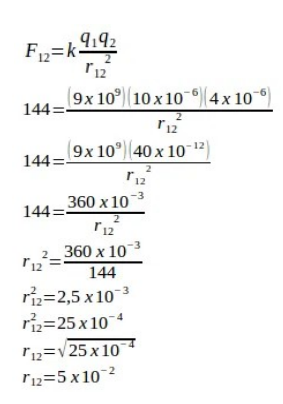
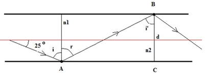
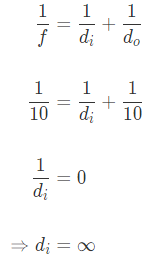
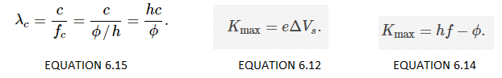

.png)
MEASUREMENT
If 1 pound = 16 ounces, how many pounds are in 435 ounces?
A student averaged 45 miles per hour on a trip. What was the student’s speed in feet per second?
A room is 10 ft by 12 ft. How many square yards are in the room? The area of the room is 120 ft2 (area = length × width).
A child is prescribed a dosage of 12 mg of a certain drug per day and is allowed to refill his prescription twice. If there are 60 tablets in a prescription, and each tablet has 4 mg, how many doses are in the 3 prescriptions (original + 2 refills)?
SCALARS AND VECTORS
Michael walks 10m north, 3m west, 5m south, 12m east, and then stops to catch his breath. What is the magnitude of his displacement from his original point?
Two vectors, F1 = 20 N and F2 = 30 N, have direction as shown in the figure below. Determine the resultant of components of vectors in x-axis and y-axis.
Solution:
Consider the two vectors a and b shown in Figure 2. Suppose a has modulus 4 units, b has modulus 5 units, and the angle between them is 60◦, as shown.
Figure 2. a and b have lengths 4 and 5 units respectively; the angle between them is 60◦. We can use the definition given above to find the scalar product of a and b.
So, the scalar product of these vectors is the number 10.
Note that the answer is a scalar, that is a number, rather than a vector.
So, we have learnt a method of combining two vectors to produce a scalar.
KINEMATIC QUANTITIES
Ben Rushin is waiting at a stoplight. When it finally turns green, Ben accelerated from rest at a rate of a 6.00 m/s2 for a time of 4.10 seconds. Determine the displacement of Ben's car during this time period.
Solution:
The solution above reveals that the car will travel a distance of 50.4 meters.
Ima Hurryin is approaching a stoplight moving with a velocity of +30.0 m/s. The light turns yellow, and Ima applies the brakes and skids to a stop. If Ima's acceleration is -8.00 m/s2, then determine the displacement of the car during the skidding process. (Note that the direction of the velocity and the acceleration vectors are denoted by a + and a - sign.)
Solution:
The solution above reveals that the car will skid a distance of 56.3 meters. (Note that this value is rounded to the third digit.)
A car slows down its motion from 10 m/s to 6 m/s in 2 seconds under constant acceleration.
(a) What is its acceleration?
In this problem, we want to find the acceleration, given the time, initial and final velocities so the kinematics equation v=v0+at is perfect since the only unknown quantity is acceleration a. Thus,
Note that because the problem is said the acceleration of the motion is constant so we could use the constant acceleration kinematics equations.
The negative indicates the direction of the acceleration which is, here, toward the negative x axis.
(b) How far did the car travel during this time interval?
UNIFORMLY ACCELERATED MOTIONS
From rest, a car accelerated at 8 m/s2 for 10 seconds.
a) What is the position of the car at the end of the 10 seconds?
b) What is the velocity of the car at the end of the 10 seconds?
Solution:
a) The car starts from rest therefore the initial speed u = 0. Nothing is said about the initial position and we therefore assume it is equal to 0. Hence the position x is given by the equation
where a is the acceleration (=8 m/s2) and t is the period of time between initial and final positions
A train brakes from 40 m/s to a stop over a distance of 100 m.
a) What is the acceleration of the train?
b) How much time does it take the train to stop?
Solution:
a) We are given the initial velocity u = 40 m/s, the final velocity v = 0 (train stops) and the distance. Hence the formula that relates these 3 quantities and the acceleration is given by
b) There two ways to find the time:
1) Use: x = (1/2)(v + u) t 100 = 0.5(0 + 40) t Solve for t: t = 5 seconds. 2) Use x = (1/2) a t2 + ut 100 = 0.5 ( - 8) t2 + 40t 4 t2 - 40 t + 100 = 0 4 (t2 - 10 t + 25) = 0 4(t - 5)2 = 0 t = 5 seconds. The acceleration of the train is - 8 m/s2 and it takes 5 seconds to stop.An airplane accelerates down a runway at 3.20 m/s2 for 32.8 s until is finally lifts off the ground. Determine the distance traveled before takeoff.
Given:
Find:
The distance traveled by an airplane before takeoff is 1720 m.
MOTION IN TWO DIMENSIONS
An object is shot from the ground at 75m/s at an angle of 45⁰ above the horizontal. How high does the object get before beginning its descent?
An object is shot from the ground at 125m/s at an angle of 30o above the horizontal. How far away does the object land?
A 2kg box is at the top of a frictionless ramp at an angle of 60o. The top of the ramp is 30m above the ground. The box is sitting still while at the top of the ramp, and is then released.
NEWTON'S LAW OF MOTION
1. The acceleration due to gravity on Earth is 9.8 m/s2. On the moon, the acceleration due to gravity is only as much as one-sixth of Earth 's. Compare the mass and weight of a 60-kg person on Earth and on the moon.
Solution:
A 3.70e3 kg elevator is being raised by a cable that exerts a 4.00e4 N force upwards. Determine the acceleration of the elevator.
There are only two forces acting on the elevator, the force of tension in the cable pulling it up and the force of gravity acting down.
It is the net force that causes the acceleration of the elevator, so we're basically solving for that. We can substitute in FNET = ma
Remember to use negative for down and positive for up.
Solution:
The acceleration of the elevator is 1.00 m/s2 [upwards].
A 0.0500 g piece of paper is dropped. If it falls with an acceleration of 0.390 m/s2 [down] determine the friction acting on the paper.
The frictional force must be pointing upwards since it will resist the motion of the paper falling down.
Don't forget to turn the mass into kilograms.
Soution:
The friction acting on the paper is 4.71e-4 N [up].
WORK, POWER, AND MECHANICAL ENERGY
Solution:
How much potential energy is lost by a 5Kg object to kinetic energy due a decrease in height of 4.5m.
Solution:
When doing a chin-up, a physics student lifts her 42.0-kg body a distance of 0.25 meters in 2 seconds. What is the power delivered by the student's biceps?
To raise her body upward at a constant speed, the student must apply a force which is equal to her weight (m•g). The work done to lift her body is
The power is the work/time ratio which is (102.9 J) / (2 seconds) = 51.5 Watts (rounded)
MOMENTUM
Determine the momentum of the following:
a. 60-kg halfback moving eastward at 9 m/s.
b. 1000-kg car moving northward at 20 m/s.
40-kg freshman moving southward at 2 m/s.
Solution:
a.
b.
c.
A 12,000kg railroad car is traveling at 2m/s when it strikes another 10,000kg railroad car that is at rest. If the cars lock together, what is the final speed of the two railroad cars?
Solution:
a) We are given the initial velocity u = 40 m/s, the final velocity v = 0 (train stops) and the distance. Hence the formula that relates these 3 quantities and the acceleration is given by
The final speed of the two railroad cars is 1.1 m/s.
A 9,300 kg. railroad car traveling at a velocity of 15m/s strikes a second boxcar at rest. If the two cars stick together and move off with a velocity of 6m/s, what is the mass of the second car?
Solution:
13,950 kg is the mass of the second car.
ROTATIONAL MOTION
A beam 140 cm in length. There are three forces acts on the beam, F1 = 20 N, F2 = 10 N, and F3 = 40 N with direction and position as shown in the figure below. What is the torque causes the beam rotates about the center of mass of the beam?
Given:
Solution:
The magnitude of the torque is 39 N m. The direction of rotation of the beam clockwise, so assigned a negative sign.
What is the net torque acts on the beam The axis of rotation at point D. (sin 53o = 0.8)

Given:
Solution:
What is the net torque if the axis of rotation at point D. (sin 53o = 0.8)
Given:
Solution:
MECHANICAL WAVES
The speed of the transverse wave on a 25 meters rope is 50 m/s. The tension force of the rope is 200 N. Determine the mass of rope.
Given:
Solution:
Radio waves travel at the speed of light, 3.00 × 108 m/s. (a) AM radio waves have a frequency range of 530 kHz to 1600 kHz. What range of wavelengths does this correspond to? (b) FM waves have wavelengths of 2.77 m to 3.40 m. What range of frequencies does this correspond to?
Speed, wavelength, and frequency of a wave are related by v = λf. We can rearrange this to get λ = v/f or f = v/λ.
(a) For AM radio waves:
(i) λ = 3.00 × 108 m/s / 530 × 103 s¬1 = 566 m.
(ii) λ = 3.00 × 108 m/s / 1600 × 103 s¬1 = 188 m.
(b) For FM radio waves:
(i) f = 3.00 × 108 m/s / 2.77 m = 1.08 × 108 Hz = 108 MHz.
(ii) f = 3.00 × 108 m/s / 3.40 m = 8.82 × 107 Hz = 88.2 MHz.
A cork on the surface of water moves up and down due to the surface water waves. The time required from a crest to next crest is 1.2 seconds. If on the water surface, the distance between two crests is 10 cm, then determine the speed of the wave propagation.
Given:
The time required from crest to the next crest = the time interval for one wavelength = period (T) = 1.2 seconds.
Distance between two crests = distance of 1 wavelength (λ) = 10 cm
Wanted: Speed of the wave propagation (v)
Solution:
Speed of the wave propagation:
v = f λ = λ / T = 10 cm / 1.2 seconds = 8.3 cm/second = 8.3 cm/s-1
FLUID MECHANICS
A container weighs 3.22 lb force when empty. Filled with water at 60°F the mass of the container and its contents is 1.95 slugs. Find the weight of the water in the container and its volume in cubic feet. Assume density of water = 62.4 lb force/ft3.
Solution: .
One slug is defined as 1 lb of force per 1 ft/sec2 acceleration. By Newton's law of motion.
1 lb force = [(1 lb mass × 32.2 ft/sec2) / gc]
Where .
gc = [(32.2 lb mass–ft) / (lb force–sec2)]
= a term serving the purpose of dimensional adjustment. From this it follows that one slug, by definition, equals 32.2 lb m.
That is;
1 slug = 1 [(lb force–sec2) / ft] = 32.2 lb mass
Then 1.95 slug = 1.95 × 32.2 = 62.79 lb mass. This under the gravitational acceleration equals 62.79 lb force. The weight of the container equals 3.22 lb force, so that the weight of water in lb force = 62.79 – 3.22 = 59.57. Since the unit weight of water is 62.4 lb force/ft3,
the Volume of the water m the container = [(59.57 lbf) / (62.4 lbf/ft3)] = 0.955 ft3
The specific weight of water at ordinary pressure and temperature is 62.4 lb/ft3 (9.81 kN/m3). The specific gravity of mercury is 13.55. Compute the density of water and the specific weight and density of mercury.
Solutions:
Knowing that density and specific weight of a fluid are related as follows:
ρ = (γ/g) or γ = ρg
and that specific gravity s of a liquid is the ratio of its density to that of pure water at a standard temperature, we can calculate:
ρwater = [(γwater) / g] = [(62.4 lb/ft3) / (32.2 ft/s2)] = 1.94 slugs/ft3
= [(9.81 kN/m3) / (9.81 m/s2)] = 1.00 Mg/m3 = 1.00 g/cm3
γmercury = smercury γwater = 13.55(62.4) = 846 lb/ft3
13.55(9.81) = 133 kN/m3
ρmercury = smercury ρwater = 13.55(1.94) = 26.3 slugs/ft3
13.55(1.00) = 13.55 Mg/m3
Compare the rate of change of pressure with elevation for air at sea level, p = 14.7 psia (101.3 kPa), at a temperature of 60°F (15.5°C) for fresh water. Assuming constant specific weights for air and water, determine also the total pressure change which occurs with a 10-ft decrease in elevation.
Solution:
Determine specific weights of water and air:
ρair = (p / RT) = [(14.7 × 144) / (1716 × 520)] = 0.00237 slugs/ft3
γair = 0.00237 × 32.2 = 0.0764 lbf/ft3 and
γwater = 62.4 lbf/ft3 then,
(dp / dz) = – γ or
(dp / dz)air = – 0.0764 lbf/ft3 (– 12.0 N/m3)
(dp / dz)water = – 62.4 lbf/ft3 (– 9.81 kN/m3)
Assuming constant specific weight
(p2 – p1) = – γ (Z2 – Z1) Z2 > Z1
Total pressure change for air = (– 0.0764) (– 10)
= 0.764 psf (36.6 Pa) ⇐ answer
Total pressure change for water = (– 62.4) (– 10)
= 624 psf (29.8 kPa) ⇐ answer
TEMPERATURE AND HEAT
On a thermometer X, the freezing point of water at -30o and the boiling point of water at 90o. 60OX = ….. oC.
Known:
The freezing point of water = -30o
The boiling point of water = 90o
Wanted: 60oX = ….. oC
Solution:
On the Fahrenheit scale, the freezing point of water is 32oF and the boiling point of water is 212oF. Between the freezing point and the boiling point, 212o – 32o = 180o.
On the Celsius scale, the freezing point of water is 0oC and the boiling point of water is 100oC. Between the freezing point and the boiling point, 100o – 0o = 100o.
On the X scale, the freezing point of water is -30oX and the boiling point of water is 90oX. Between the freezing point and the boiling point, 90o – (-30o) = 90o + 30o = 120o.
Change the X scale to the Celsius scale:

The initial length of a brass rod is 40 cm. After heated, the final length of the brass is 40.04 cm and the final temperature is 80oC. If the coefficient of linear expansion of the brass is 2.0 x 10-5 oC–1, what is the initial temperature of the brass rod.
Known:
The final temperature (T2) = 80oC
The initial length (Lo) = 40 cm
The final length (L) = 40.04 cm
The increase in length (ΔL) = 40.04 cm – 40 cm = 0.04 cm
The coefficient of linear expansion (α) = 2.0 x 10-5 oC-1
Solution: Initial temperature (T1)
Solution;
The equation of the linear expansion:
L = Lo + α Lo ΔT
L – Lo = α Lo ΔT
ΔL = α Lo ΔT
ΔL = α Lo (T2 – T1)
0.04 = (2.0 x 10-5)(40)(80 – T1)
0..04 = (80 x 10-5)(80 – T1)
0.04 = 0.0008 (80 – T1)
0.04 = 0.064 – 0.0008 T1
0..0008 T1 = 0.064 – 0.040
0.0008 T1 = 0.024
T1 = 30oC
Two metal rods with the same size but different type, as shown in figure below. The thermal conductivity of metal I = 4 times the thermal conductivity of metal II. What is the temperature between both metals?
Known:
The size of both rods is the same.
The thermal conductivity of metal I = 4k
The thermal conductivity of metal II = k
The temperature of the one end of metal I = 500 C
The temperature of the one end of metal II = 00 C
Wanted: The temperature between both the metal rods
Solution: The equation of the heat conduction:
Q/t = the rate of heat conduction, k = thermal conductivity, A = the cross-sectional area, T1-T2 = the change in temperature, l = the length of the rod.
The temperature between both rods:

The temperature at the center between both the metals rods is 40oC.
THE FIRST LAW OF THERMODYNAMICS
A gas contained in a cylinder fitted with a frictionless piston expands against a constant external pressure of 1 atm from a volume of 5 litres to a volume of 10 litres. In doing so it absorbs 400 J of thermal energy from its surroundings. Determine the change in internal energy of system.
Solution:
Given data
q = 400 J V1=5L V2 = 10L
∆u = q-w (heat is given to the system (+q); work is done by the system(-w)
∆u q - PdV = 400 J - 1 atm (10-5)L =400 J - 5 atm L
[∴ 1 L atm = 101.33 J] =400 J - 5 × 101.33 J =400 J - 506.65 J =- 106.65 J
2000 J of heat is added to a system and 2500 J of work is done on the system. What is the change in internal energy of the system?
Known:
Heat (Q) = +2000 Joule
Work (W) = -2500 Joule
Wanted: The change in internal energy of the system
Solution:
ΔU = Q-W
ΔU = 2000-(-2500) ΔU = 2000+2500 ΔU = 4500 Joule
Internal energy increases by 4500 Joule.
5000 J of heat are added to two moles of an ideal monatomic gas, initially at a temperature of 500 K, while the gas performs 7500 J of work. What is the final temperature of the gas?
Solution:
THE SECOND LAW OF THERMODYNAMICS
A reversible heat engine receives 3000 KJ of heat from a constant temperature source at 650 K. If the surroundings is at 295 K, determine;
i) the availability of heat energy
ii) Unavailable heat.
Result:
1) The availability of heat energy (A) = 2064.85 KJ.
2) Unavailable heat (U.A) = 935.15 KJ
A domestic food freezer maintains a temperature of - 15°C. The ambient air is at 30°C. If the heat leaks into the freezer at a continuous rate of 1.75 KJ/s, what is the least power necessary to pump the heat out continuously?
Given Data:
TL = - 15°C = 273 –15 = 258 K
TH = 30°C = 273 + 30 = 303 K
QS = 1.75 KW
To find:
Least power, (W)
Solution:
Result:
Least power necessary to pump heat, W = 0.305 KW.
A refrigerator working on reversed Carnot cycle requires 0.5 KW per KW of cooling to maintain a temperature of -15°C. Determine the following:
a) COP of the refrigerator
b) Temperature at which heat is rejected and
Amount of heat rejected to the surroundings per KW of cooling.
Given Data:
W = 0.5 KW
Q2 = 1 KW
T2 = -15°C = 273 –15 = 258 K.
To find:
1) COP of the refrigerator (COP
2) Temperature at which heat is rejected (T1)
3) Amount of heat rejected to the surroundings per KW of cooling (Q1)
Solution:
Result:
1) COP of the refrigerator (COP) = 2
2) Temperature at which heat is rejected (T1) = 387 K
Amount of heat rejected to the surroundings per KW of cooling (Q1) = 1.5 KW.
ELECTRIC CHARGES
How many electrons are needed to form a charge of –2.00 nC?
Solution:
How many electrons must be removed from a neutral object to leave a net charge of 0.500 µC?
Solution:
ELECTROSTATIC FORCE, ELECTRIC FIELD, AND ELECTRIC FLUX
If the static electric force is 144 N, what is the distance between both charges…
(1 μC = 10-6 C and k = 9.109 N.m2)
Given:
Find:
Solution:
Two charges separated by a distance of r. If the static electric force is 3.6 N, what is the distance between both charges
(1 μC = 10-6 C and k = 9.109 N.m2.C-2)
Given:
Find:
Solution:
Three point charges as shown in figure below. What is the magnitude of the static electric force at point A
(k = 9.109 N.m2.C-2; 1 μ = 10-6)
Given:
Find:
Solution:
In the vicinity of point charge q, we place a 0.2μC-charge so that a force of 5 x 10^{-5}N applied on it due to the charge qq. Find the electric field produced by this unknown charge q?
Solution:
ELECTRIC POTENTIAL
An electron is accelerated from rest through a potential difference 12 V. What is the change in electric potential energy of the electron?
Given:
Solution:
Two parallel plates are charged. The separation between the plates is 2 cm and the magnitude of the electric field between the plates is 500 Volt/meter. What is the change in potential energy of the proton when accelerated from the positively charged plate to the negatively charged plate.
Given:
Solution:
Two point charges are separated by a distance of 10 cm. Charge on point A =+9 μC and charge on point B = -4 μC. k = 9 x 10⁹ Nm2C−2, 1 μC = 10−6 C. What is the change in electric potential energy of charge on point B if accelerated to point A?
Given:
Solution:
VOLTAGE, CURRENT, AND RESISTANCE
The electric potential at a point located at 1 cm from a charge 5.0 μC. Coulomb constant (k) = 9 x 10⁹ Nm²C−2, 1 μC = 10^−6 C.
Given:
Solution:
2.Charge Q1 = 5.0 μC and charge Q2 = 6.0 μC. Coulomb’s constant (k) = 9 x 10⁹ Nm²C^−2, 1 μC = 10^−6 C. Point A located between the charges. Determine electric potential at point A.
Given:
Solution:

3.Charge q1 = 5.0 μC and charge q2 = 6.0 μC. Coulomb’s constant (k) = 9 x 10⁹ Nm²C^−2, 1 μC = 10^−6 C. Determine the electric potential at point A.
Given:
Solution:
CAPACITANCE
Determine the amount of charge stored on either plate of a capacitor (4x10^-6 F) when connected across a 12 volt battery.
Solution:
If the plate separation for a capacitor is 2.0x10^-3 m, determine the area of the plates if the capacitance is exactly 1 F.
Solution:
Calculate the voltage of a battery connected to a parallel plate capacitor with a plate area of 2.0 cm2 and a plate separation of 2 mm if the charge stored on the plates is 4.0pC.
Solution:
USAGE OF ELECTRIC ENERGY
220 V – 5 A electric lamp is used for 30 minutes. How much energy does it require?
Given:
Solution:
A 220 V – 60 W solder is used for 4 minutes. How much energy does it require.
Given:
Solution:
The energy used by the iron for 1 minute is 33 kJ, at a voltage of 220 volts. How large the current is in the iron.
Given:
Solution:
R-C CIRCUITS
An uncharged capacitor and a resistor are connected in series shown in the figure below. The battery’s emf is E=12V, C=8μF, R=500kΩ. After the switch is closed, find,
(a) The time constant of the RC circuit.
(b) The maximum charge on the capacitor.
(c)The charge on the capacitor 6 s after the switch is closed.
Solution:
In the following RC circuit, the total resistance is 20kΩ, and the battery's emf is 12 V. Suppose the time constant of this RC circuit is 18μs. Find,
(a) The capacitance of the circuit.
(b) The time it takes the voltage across the resistor to reach 9 V after closing the switch.
Solution:
A 9-V battery is used to charge a 4−μC capacitor through a resistor of 100Ω. Find:
(a) The initial current through the circuit.
(b) The final charge on the capacitor after completely being charged.
(c) The time it takes for the capacitor to reach 96% its maximum charge.
Solution:
MAGNETIC POLES, MAGNETIC FORCE, AND MAGNETIC FIELD
A particle with a charge of 2μC is moving at 3⋅10⁶ m/s perpendicularly through a magnetic field with a strength of 0.05T. What is the magnitude of the force on the particle?
Solution:
An 8cm wire with a current of 2A is oriented 36∘ from parallel to a magnetic field with a strength of 6T. What is the force on the wire?
Solution:
A proton travelling at 1 • 10⁷ m/s1 • 10⁷ m/s in a horizontal plane passes through an opening into a mass spectrometer with a uniform 3T magnetic field directed upward. The particle then moves in a circular path through 180° and crashes into the wall of the spectrometer adjacent to the entrance opening. How far down from the entrance is the proton when it crashes into the wall?
Solution:
THE MAGNETIC FIELD
A charged particle of q=4μC moves through a uniform magnetic field of B=100G with velocity 2×10³ m/s. The angle between B and v is 30°. Find the magnitude of the force acting on the charge Solution:
Solution:
The magnetic field B=0.5i is acting on proton moving in xy plane with velocity v =10⁵i. Find the force acting on the proton.
Solution:
A proton (mass1.66x10^27kg is circulating in the plane of the page due to a magnetic field perpendicular to the page and directed into it. The radius of its circulating motion is 9cm and its speed is 1.6km/s. Find the value of the magnetic field and the direction of the motion.
Solution:
MAGNETIC INDUCTION
The electric current I flows on the conductor wire. What is the magnetic induction at the center of the circle (P)? (µo = 4π.10-7 Wb.m-1.A-1)
Known:
Radius of circle (r) = 6 cm = 6 x 10-2 meters
Electric current (I) = 8 Ampere
Permeability of a vacuum (µo) = 4π x 10-7 Wb.A-1 m-1
Wanted: the magnetic induction at the center of the circle (P)
Solution:
360o – 90o = 270o. 270o / 360o = 3/4 then 270o = 3/4 circumference
The magnetic field formula at the center of the coil with a number of loops:
B = magnetic field, N = number of windings, I = electric current, r = radius of curvature
In the above problem, there is only one winding so that N is removed from the equation. The wire coil on the above problem is not 1 circle but 3/4 circle. The above formula is adjusted again with this problem:
The magnetic induction at the center of the circle:
Current 2 A flows on a circular wire like the picture. What is the magnitude and direction of magnetic induction at point P if the radius of circle 4π cm.?
Known:
Radius (r) = 4π cm = 4π x 10-2 meters
Electric current (I) = 2 Ampere
Permeability of a vacuum (µo) = 4π x 10-7 Wb.A-1 m-1
Wanted: The magnitude and direction of magnetic induction at point P
Solution:
The wire coil on the above problem is 1/2 circle.
The magnitude of magnetic induction at point P:
A circular loop of area 5 x 10-2m2 rotates in a uniform magnetic field of 0.2 T. If the loop rotates about its diameter which is perpendicular to the magnetic field as shown in figure. Find the magnetic flux linked with the loop when its plane is (i) normal to the field (ii) inclined 60o to the field and (iii) parallel to the field.
Solution
A = 5 ´ 10-2 m2; B = 0.2 T
(i) θ = 0°
1. A closed coil of 40 turns and of area 200 cm2, is rotated in a magnetic field of flux density 2 Wb m-2. It rotates from a position where its plane makes an angle of 30º with the field to a position perpendicular to the field in a time 0.2 sec. Find the magnitude of the emf induced in the coil due to its rotation.
Solution
N = 40 turns; B = 2 Wb m-2
A = 200 cm2 = 200 ´ 10-4 m2;
COMMON PROPERTIES OF LIGHT
A light ray strikes a reflective plane surface at an angle of 56° with the surface.
a) Find the angle of incidence.
b) Find the angle of reflection.
c) Find the angle made by the reflected ray and the surface.
d) Find the angle made by the incident and reflected rays.
Solution:
We use the diagram shown below to answer the questions.
a) angle of incidence: i = 90 - 56 = 34 °
b) angle of reflection r = i = 34 ° (by the law of reflection)
c) q = 90 - r = 90 - 34 = 56 °
d) i + r = 34 + 34 = 68 °
A ray of light is reflected by two parallel mirrors (1) and (2) at points A and B. The ray makes an angle of 25° with the axis of the two mirrors.
a) What is the angle of reflection at the point of incidence A?
b) What is the angle of reflection at the point of incidence B?
c) If the distance between the two mirrors id d = 4 cm and the length L of the two mirrors system is 3 meters, approximately how many reflections take place between the two mirrors?
d) In a real system, at each reflection, there are losses of the light energy travelling between the two mirrors. If L and d are fixed, what can be done to decrease the number of reflections on the mirrors and hence the energy lost by reflection?
Solution:
Let's use the diagram shown below to answer the questions. n1 and n2 are normal to the reflecting mirrors and are therefore perpendicular to the axis of the two mirrors system.
a) i = 90 - 25 = 75 °
b) the two mirrors are parallel and AB intersect both of them, hence angle r and i' are alternate interior and therefore equal in size. Also r = i (law of reflection). Hence i' = r = i = 75 °
c) If the distance between the two mirrors id d = 4 cm, AC can be calculated as follows
tan(75°) = AC / d = AC / 4
AC = 4 tan(75°) = 15 cm
The number of reflections N that will take place between the two mirrors may be approximated as follows.
N = L / AC = 3 m / 15 cm = 20
d) Let the angle made by the light ray and the axis of the two mirror system be α instead of 25 °.
The angle of incidence i = 90 - α = r = i'
tan(i') = tan( 90 - α) = cot (α) = AC / d
AC = d cot(α)
number of reflections = N = L / AC = L / d cot(α)
If L and d are fixed, the only way to decrease N is to increase cot(α) and hence decrease α.
A grating containing 4000 slits per centimeter is illuminated with a monochromatic light and produces the second-order bright line at a 30° angle. What is the wavelength of the light used? (1 Å = 10-10 m)
Known:
The distance between slits (d) = 1 / (4000 slits / cm) = 0.00025 cm = 2.5 x 10-4 cm = 2.5 x 10-6 meters
Order (n) = 2
Sin 30o = 0.5
1 Å = 10-10 m
Wanted: Wavelength of the light (λ)
Solution:
BEHAVIOR OF LIGHT IN OPTICAL DEVICES
What is the index of refraction in a medium where the speed of light is 1.5×108 m/s.
Solution:
n = c / v
n = 3×108 m/s / 1.5×108 m/s
n = 2
A ray of light is incident through glass, with refractive index 1.52, on an interface separating glass and water with refractive index 1.32. What is the angle of refraction if the angle of incidence of the ray in glass is 25 °?
Solution:
Use Snell's law to write: 1.52 sin 25° = 1.32 sin t
t = arcsin((1.52/1.32) sin 25) ≈ 29.1 °
A light ray strikes a homogeneous rectangular block of glass of thickness w at an angle i. The ray emerges at point B at an angle i'. (see diagram below)
a) Find i' in terms of i and show that the emerging and incident rays are parallel.
b) Find the lateral displacement which is the distance d between the incident and emerging rays in terms of angle i, the refractive indices n1 and n2 and width w of the block.
c) Use the formula obtained in part b) to calculate d for n1 = 1, n2 = 1.55, w = 3 cm and i = 32°.
Solution:
a) Snell's at point A
n1 sin i = n2 sin j
Snell's law at point B
n2 sin k = n1 sin i'
The normals NA and NB to the interfaces at A and B are parallel to each other and
therefore angles j and k are equal. Hence
n1 sin i = n2 sin j = n2 sin k = n1 sin i'
Therefore i'= i
The incident and emerging have equal angles with the normals therefore the
emerging and incident rays are parallel.
b) Find d
Consider the right triangle ABO.
sin α = d / AB
Consider triangle ABO'
cos j = w / AB or AB = w / cos j
α = i - j
sin (i - j) = d / AB
Substitute AB by w / cos j in the above equationsin(i - j) = d cos j / w
d = sin(i - j) W / cos j
Use Snell's law
n1 sin i = n2 sin j
j = arcsin [ (n1/n2) sin i ]
Hence
d = w sin(i - j) / cos j
where j = arcsin [ (n1/n2) sin i ]
c) Calculate d for n1 = 1, n2 = 1.55, w = 3 cm and i = 32°.
j = arcsin [ (n1/n2) sin i ] = arcsin [ (1/1.55) sin 32°] ≈ 20 °
d = 3 sin(32 - 20) / cos 20 ≈ 0.7 cm
APPLICATION OF IMAGE FORMATION
A candle 6 cm tall is placed at a distance of 8 cm in front of a concave mirror whose radius of curvature is 20 cm. Determine the position, size, orientation, and nature (real or virtual) of the image?
Known data is object' height ho= 6cm, object distance do = 10cm, and the radius of curvature of the mirror R = 20cm. The focal length is obtained as below.
As you can see, do < f that is the object is located between the focal point and the concave mirror. In such cases, we have a virtual, upright, and bigger image (see the previous problem).
Applying the mirror equation get the position of the image di as below
Reversing both sides of the above, we have di=−40cm. Because image distance di is negative, the image is on the opposite side of the mirror and hence is virtual.
To quantify how much bigger the image is in the curved mirrors, we use the magnification formula for curved mirrors as below
Where hi,ho are the image and object heights.
Thus, the object is magnified as big as 5 times.
A certain concave spherical mirror has a focal length of 10 cm. An object is located 10 cm in front of it. Find the properties of the image?
Solution:
Here, the object is at the focal point. Use the mirror equation to find the image position as below
Thus, the image is formed at infinity. Using magnification formula, we can see that it is also infinite.
From this problem, we conclude that when an object is placed at the focal point, its image is formed at infinity with infinite in size.
An object is placed 10 cm from a concave mirror. The focal length is 5 cm. Determine (a) The image distance (b) the magnification of image
Known:
The focal length (f) = 5 cm
The object distance (do) = 10 cm
Solution:
Formation of image by concave mirror:
The image distance :
1/di = 1/f – 1/do = 1/5 – 1/10 = 2/10 – 1/10 = 1/10
di = 10/1 = 10 cm
The image distance is 10 cm.
The magnification
m = –di / do = -10/10 = -1
1 means that the image is the same as the object.
The minus sign indicates that the image is inverted. If the sign is positive than the image is upright.
WAVE PROPERTIES OF LIGHT
A parallel beam of electromagnetic radiation with energy flux S = 10.0 W/cm2 is incident normally on a perfectly reflecting mirror of 1.00 cm2 area for 1000 s.
(a) What is the momentum transferred to the mirror?
(b) What is the average force acting on the mirror?

A beam of unpolarized light shines on the three. polarizers in Figure 1. The lines indicate the axes of transmission of the polarizers. Find the intensity of light (in terms of IO) at points A, B, and C.

STUDY GUIDE: Wave Properties of Light
A characteristic hydrogen line from a distant galaxy is measured on Earth to have a reduction in frequency of 25% compared to the same hydrogen line on Earth. What is the radial velocity of this galaxy with respect to Earth?
THE THEORY OF SPECIAL RELATIVITY
The Hypersonic Technology Vehicle 2 (HTV-2) is an experimental rocket vehicle capable of traveling at 21,000 km/h (5830 m/s). If an electronic clock in the HTV-2 measures a time interval of exactly 1-s duration, what would observers on Earth measure the time interval to be?
Strategy
Apply the time dilation formula to relate the proper time interval of the signal in HTV-2 to the time interval measured on the ground.
Solution:
1. Identify the knowns: Δτ=1s; v=5830m/s.
2. Identify the unknown: Δt.
3. Express the answer as an equation:
4. Do the calculation. Use the expression for γ to determine Δt from Δτ:
Significance
The very high speed of the HTV-2 is still only 10-5 times the speed of light. Relativistic effects for the HTV-2 are negligible for almost all purposes, but are not zero.
How fast must a vehicle travel for 1 second of time measured on a passenger’s watch in the vehicle to differ by 1% for an observer measuring it from the ground outside?
Strategy
Use the time dilation formula to find v/c for the given ratio of times.
Solution
1. Identify the unknown:
2. Identify the unknown: v/c.
3. Express the answer as an equation:
4. Do the calculation:
Significance
The result shows that an object must travel at very roughly 10% of the speed of light for its motion to produce significant relativistic time dilation effects.
A non-flat screen, older-style television display (Figure 5.4.35.4.3) works by accelerating electrons over a short distance to relativistic speed, and then using electromagnetic fields to control where the electron beam strikes a fluorescent layer at the front of the tube. Suppose the electrons travel at 6.00×107m/s through a distance of 0.200m0.200m from the start of the beam to the screen.
a. What is the time of travel of an electron in the rest frame of the television set?
b. What is the electron’s time of travel in its own rest frame?

Strategy for (a)
(a) Calculate the time from vt=d. Even though the speed is relativistic, the calculation is entirely in one frame of reference, and relativity is therefore not involved.
Solution
1. Identify the knowns:
2. Identify the unknown: the time of travel Δt.
3. Express the answer as an equation:
4. Do the calculation:
Significance
The time of travel is extremely short, as expected. Because the calculation is entirely within a single frame of reference, relativity is not involved, even though the electron speed is close to c.
THE PHOTOELECTRIC EFFECT AND RADIOACTIVITY
Photoelectric effect for Silver
Radiation with wavelength 300 nm is incident on a silver surface. Will photoelectrons be observed?
Strategy
Photoelectrons can be ejected from the metal surface only when the incident radiation has a shorter wavelength than the cut-off wavelength. The work function of silver is ϕ=4.73eV.
Solution:
The threshold wavelength for observing the photoelectric effect in silver is
The incident radiation has wavelength 300 nm, which is longer than the cut-off wavelength; therefore, photoelectrons are not observed.
When a 180-nm light is used in an experiment with an unknown metal, the measured photocurrent drops to zero at potential – 0.80 V. Determine the work function of the metal and its cut-off frequency for the photoelectric effect.
Strategy
To find the cut-off frequency fc, we use Equation 6.15, but first we must find the work function ϕ. To find ϕ, we use Equation 6.12 and Equation 6.14. Photocurrent drops to zero at the stopping value of potential, so we identify ΔVs=0.8V.
Equation 6.15
Equation 6.12
Equation 6.14
Solution
Significance
In calculations like the one shown in this example, it is convenient to use Planck’s constant in the units of eV⋅s and express all energies in eV instead of joules.
A 430-nm violet light is incident on a calcium photoelectrode with a work function of 2.71 eV. Find the energy of the incident photons and the maximum kinetic energy of ejected electrons.
Equation 6.16

SiGNIFICANCE
In this experimental setup, photoelectrons stop flowing at the stopping potential of 0.17 V.